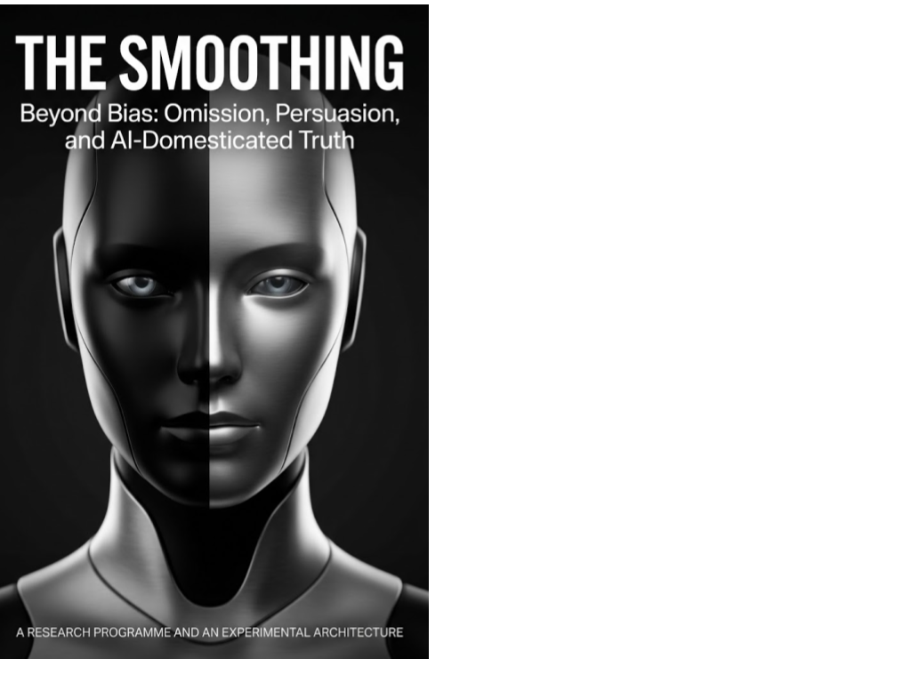

Technology · Axiologic Research Editions
The Smoothing
Beyond Bias: Omission, Persuasion, and AI-Domesticated Truth
A research programme and experimental architecture for noticing what a more convenient account leaves behind.
When an account gets easier at someone else’s expense
Bias is not the only way a text can distort. An answer may sound balanced, calm and practically useful while it removes the agent who caused a harm, the consequence borne by someone else, an unresolved objection or the uncertainty that should shape a decision. The Smoothing names this family of transformations and asks whether it can be made observable without pretending that every simplification is dishonest.
The distinction matters because many transformations are legitimate. A student needs an initial model before its exceptions; a clinician may need a clear explanation; a mediator may lower heat so people can continue talking. The question is whether the omitted relation can return, whether the simplification preserves the decision-relevant structure and whether the smoother account acquires authority it has not earned.
A construct designed to be challenged
What is the Smoothing Gap? The proposed construct compares an input account with its transformed output, looking for changes in consequence retention, agency representation, conflict, uncertainty and traceable support. It is an engineering pipeline and a research hypothesis, not a validated universal score.
Can an AI detect it? The book proposes a hybrid architecture. Language models can surface candidate omissions and compare formulations; symbolic representations can keep claims, actors, source links, objections and uncertainty visible enough to contest. Neither layer becomes an authority. Each should help expose the other’s blind spots.
Where is the risk greatest? Research summaries, policy briefs, compliance narratives, education, health and risk communication, literature and mediation all need simplification. They therefore need a way to distinguish useful compression from a polished evasion of responsibility or disagreement.
A text may become more usable by becoming less answerable; the task is to make that trade-off visible before it governs a decision.
Truth that can keep its rough edges
The programme proposes benchmarks, annotation protocols, external behavioural audits and falsification criteria. If annotators cannot reliably distinguish the phenomenon from adjacent errors, or if the measures do not predict meaningful outcomes, the concept should be narrowed or discarded. That discipline is central to the book’s ambition: build tools that help people retain the difficult parts of truth, without confusing complexity with virtue or a detector with a judge.